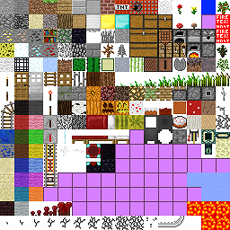

Oops ... your browser doesn't support the HTML5 canvas element
Air
Dirt
Grass
Lava
Stone
Metal
Water
Information: Press WASD to move.
Q to remove block at mouse position.
E to add block selected in panel.
Only Dirt, water and stone blocks are supported.
Press M or Tab to switch to map view.